2004

八达岭长城
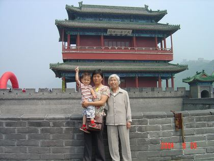
居庸关长城
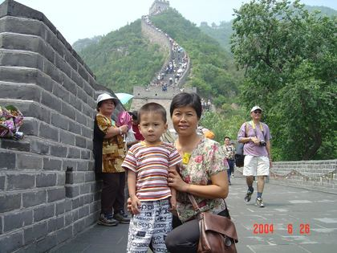
八达岭长城

八达岭长城
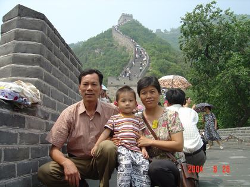
八达岭长城
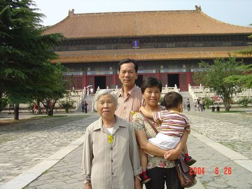
古建筑前
2006
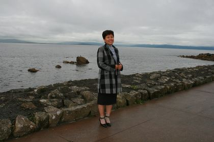
青秀山桃花
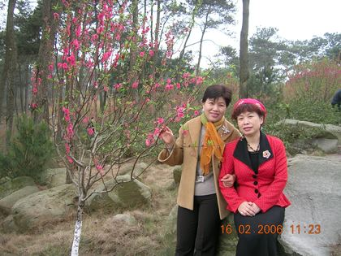
青秀山赏花
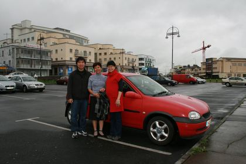
青秀山合影
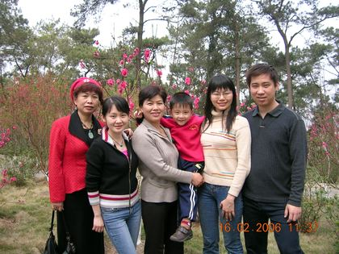
青秀山合影
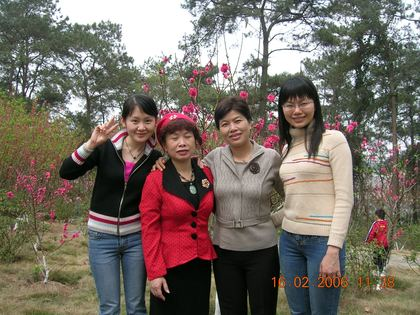
青秀山合影
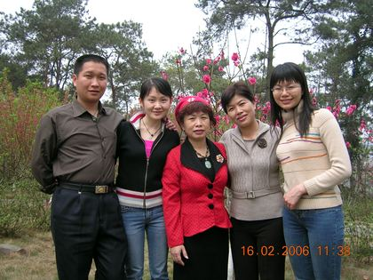
青秀山合影
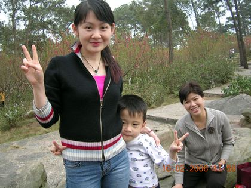
青秀山春游
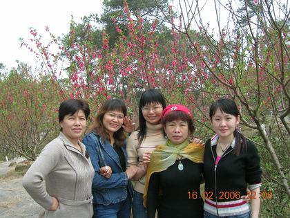
青秀山合影

青秀山合影
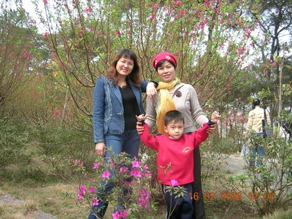
青秀山花下
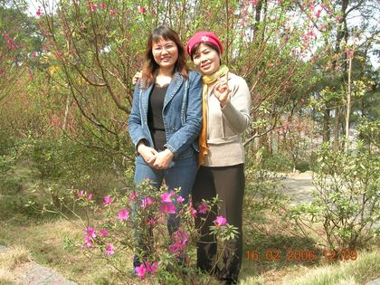
青秀山杜鹃
青秀山合影
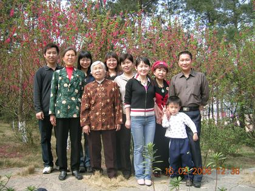
青秀山全家福
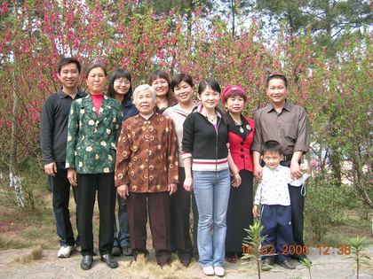
青秀山合影
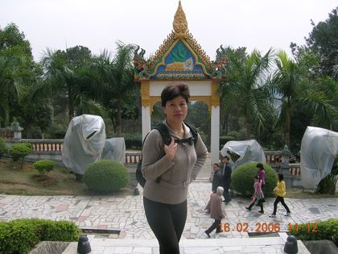
青秀山门楼
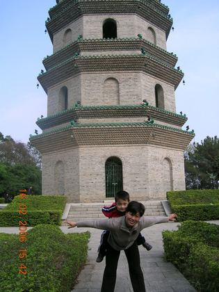
龙象塔前
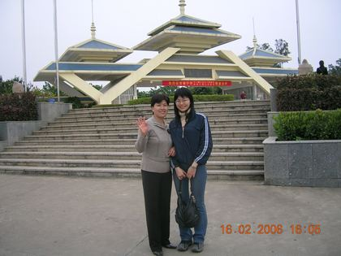
青秀山大门
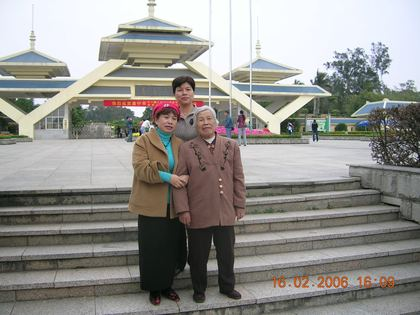
青秀山大门
2007
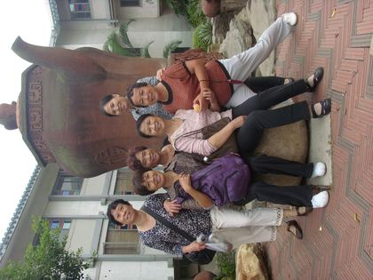
戈尔韦
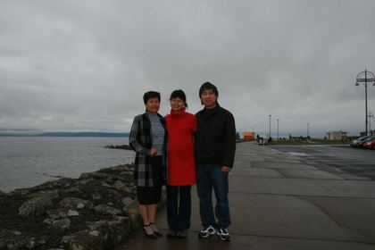
戈尔韦海边
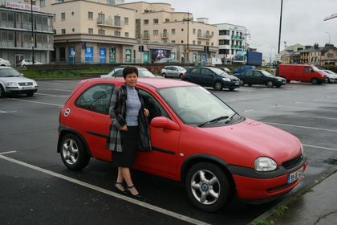
戈尔韦
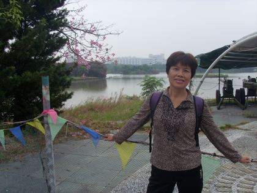
戈尔韦

戈尔韦海边
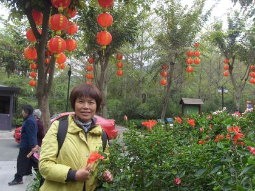
戈尔韦

戈尔韦
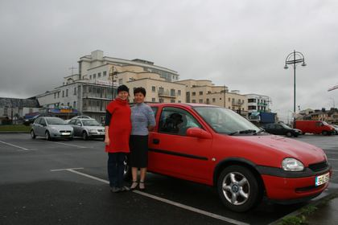
戈尔韦

戈尔韦

戈尔韦

戈尔韦
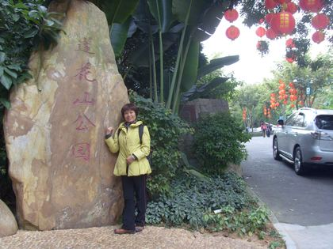
戈尔韦

戈尔韦
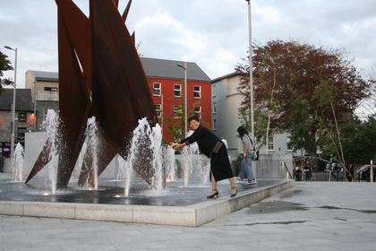
戈尔韦广场
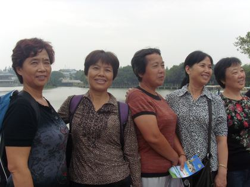
戈尔韦商业街
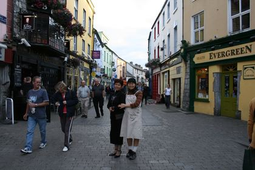
戈尔韦
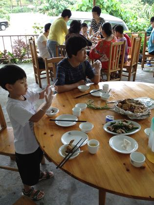
戈尔韦
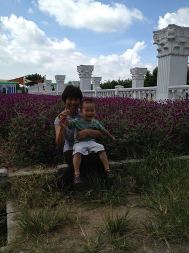
戈尔韦

戈尔韦
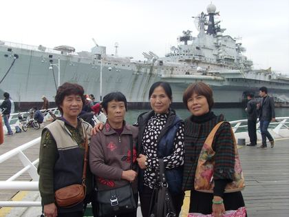
戈尔韦街头
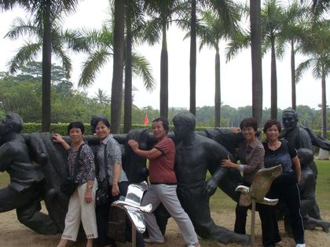
天鹅湖畔
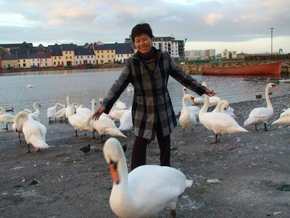
天鹅群中
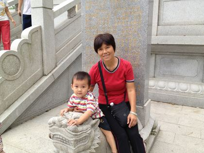
戈尔韦
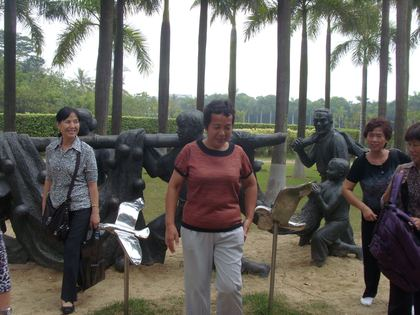
戈尔韦
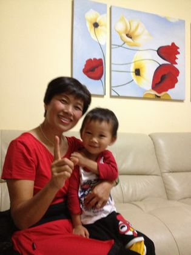
戈尔韦
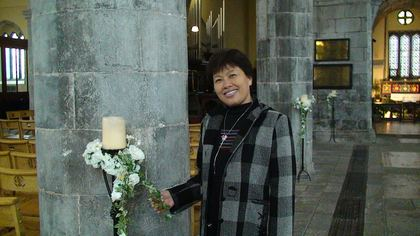
戈尔韦教堂
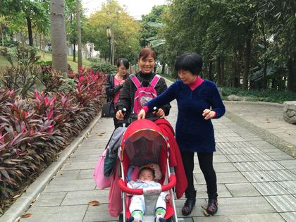
教堂苦像前
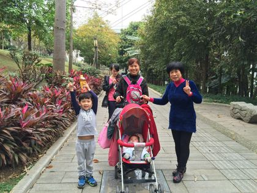
圣母像前

祭坛前

教堂内
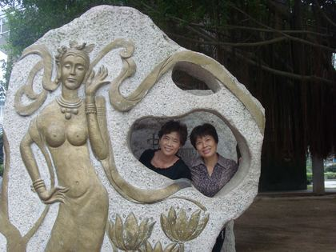
花窗前
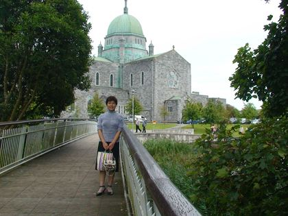
教堂前

教堂前
桥上

草地上
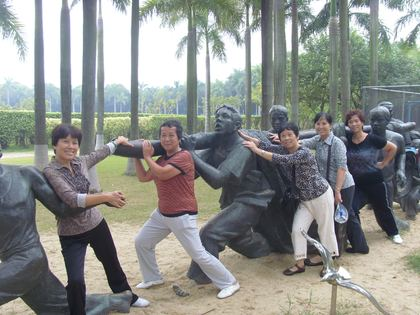
公园里

公园里
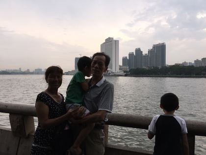
公园里

街头

街头
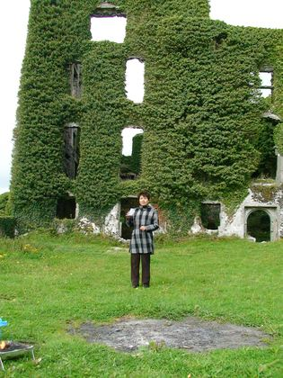
古迹前
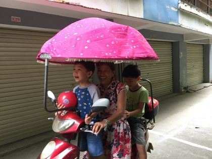
聚餐

餐厅聚餐

餐厅聚餐
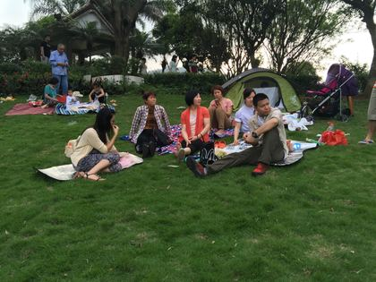
中秋夜
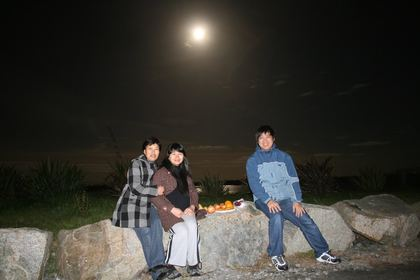
中秋夜

中秋夜
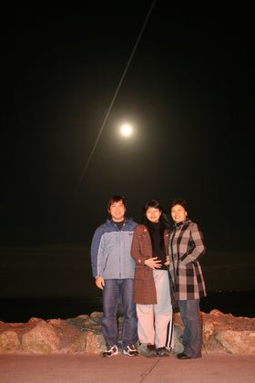
家中
2009
夜晚玩耍
室内合影

家中日常
山上祭祖
祭祖小憩

户外合影

山坡合影

车站候车

候车时光
游船小憩
船舱抱睡
船上同行

船舱休息
2010

家中团聚
全家合影
家中照看

节日游行
游行途中

抱着二东
家中合影
城堡前留影
路边留影

车上抱娃

公园嬉戏
古城堡前
城堡前全家福

湖畔古堡留念
城堡门前推车

国家公园门口
湖畔祖孙
湖畔抱孙
湖畔木栅留念

湖光山色间
湖畔祖孙远眺
绿荫含笑
茅草屋前守候

喷泉池畔

滑梯旁的欢笑

石阶漫步

脸贴脸
山顶全家福
山野桥上合影

高处揽胜
山坡抱娃

溪谷木栏留影
山顶远眺

抱娃观湖

床边嬉闹
湖畔迎风

陪孙玩耍
红衣小寿星

家中团聚
出行路上

楼下逗娃
操场联欢

操场合影
2011
饭店聚餐

球池玩耍

游乐场玩车
公园野餐
家中合影
2012

百色田阳
油田合影

纪念碑前
台阶合影

长台阶合影

牌坊前

家中

公园
集市
草坪野餐
草坪野餐
大运体育场

农家乐

肯德基

家中自拍
花束合影
亲密合影

指看日历

看日历
沙发合影

花丛中

花海合影

游乐园里

游乐园里
花前
马车上

花田中

花田前
游乐园里
机器人旁
机器人旁
水上乐园

摩天轮前

台阶上

石象旁

全家福
阳台上
阳台上
家中

林荫道

公园里
公园里

石像前

石像前
公园里

公园游玩
刻字石旁
登台阶

公园漫步

公园游玩

石狮旁

家中

家中

大运场馆
大运场馆
2013
公园野餐

野餐时光
造型板后
扮新郎

姐妹合影

姐妹同游
贝壳喷泉

喷泉旁
冬日公园
公园里

广场留影

姐妹合影

广场合影

同游广场

广场留影
沙头角

沙头角之行

海边散步

海边小憩
吃甘蔗
海边歇脚

海边望远

海边合影

明斯克航母

明斯克航母

航母前合影
航母前合影
明斯克航母
航母前合影

航母前合影

广场散步
广场合影
石羊群雕

摩天轮下

抱着二东

公园散步
竹林旁

公园小憩

公园闲坐

竹林合影
公园合影
车旁合影

车旁留念

逛商场
商场游玩

红旗下合影

虎门销烟

浮雕墙前
雕塑前留影

铜像合影

铜像前留念

警世钟前
海边合影

海边留念
茶壶前合影
莲花山

世界之窗
湖畔漫步

明斯克航母

花前留影
瀑布留影

航母合影
雕塑旁
湖畔合影

茶壶前合影

莲花山公园

城市一隅

莲花山公园

湖畔留影

小区花园

湖畔欢笑

木马前合影
躲猫猫

航母前合影

雕塑前合影

姐妹情深

世界之窗
雕塑园漫步
世界之窗

灯笼树旁
带娃出游

亲密合影

江畔合影

青蛙雕塑前

石雕探头

全家合影

航母旁合影

红衣姐妹

青蛙前留影

拉纤嬉戏

航母前

军舰前合影

狮身人面像

金字塔
铁塔前
景区小坐
军舰合影

水边合影

凯旋门前
雕塑旁

花园长椅

柔力球队
欧式花园

学雕塑

柔力球合影
铁塔下合影

冰雪世界

大雪人
雪人下
大瀑布前

姐妹合影
明斯克航母

球队姐妹
花丛留影

木马雕塑

公园野餐

乡间聚会
怀抱宝宝

夜游石桥

吃火锅
吃得香
夜游
榕树下
公园野餐

冬日郊游
山顶留影

亭前合影
和孩子们
2014

新春出游

灿烂笑容

全家福

新春合影

摆酷
画展留影
巨蟒壁画
2015

竹林小憩
竹林栈道
春节 · 公园

公园漫步
春节 · 公园
春节 · 公园
游乐场

餐厅

大茶壶
茶壶雕塑
江边

江边
江边漫步

江边

街头

街头
生日

生日聚会
2016
草坪野餐

草坪漫步
2017
景区合影
并肩合影
上学路上
石洞游览
看古炮

禅院祈福
家中
看展合影

大运会场馆

明华轮

明华轮

夜游商场
广州塔

广州塔
公园石椅
全家合影

纳凉时光

林间栈道

林荫合影

越秀公园
湖畔留影

湖边小坐
广州塔下
船舱小坐

旅途合影
邮轮之旅

邮轮自拍

平安夜

平安夜

平安夜

平安夜
冬夜合影

车上自拍
彩色小火车
彩伞街
彩伞下合影
灿烂笑容

外公外婆

花下留影

红叶园中
2018

水乡桥上

水乡合影
2019
自助聚餐

烧烤夜宵
中秋家宴
2021

家中

晚霞露营
2024

春节 · 老家
春节 · 老家
春节 · 老家
春节 · 老家

春节 · 老家
春节 · 老家
春节 · 老家
2025

梳头发

家中
多肉植物
家中

夜市吃粉

郊外游玩
郊外游玩

郊外游玩
秋日自拍

秋日郊游